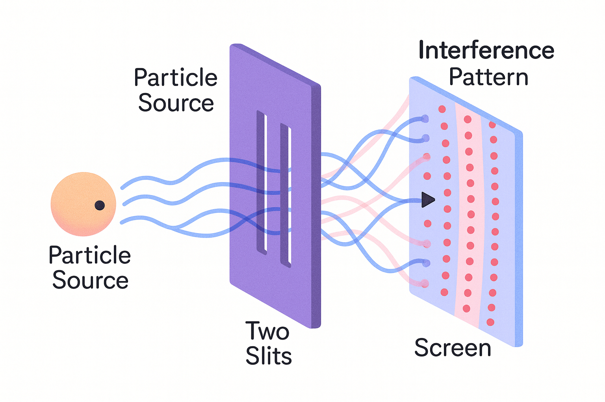

Musings
san francisco vs. nyc - 1 year review 09.05.26
It has been a year and three months since I moved to the Bay Area from New York. There have been a flurry of posts recently from San Franciscans moving to NYC, lamenting the tech monoculture and “AGI”, glorification of work and lack of hobbies. I observed that while New Yorkers are almost universally proud, San Francisco is the city people love to hate, some of the loudest voices from its own residents.
Truthfully, I love being here. A few observations about SF culture:
- Weirdness is celebrated. There’s a difference between accepting differences (NY) and truly celebrating contrarian thinkers (SF). While this can incentivize performative contrarianism, I’ll gladly take the over-correction for a culture that rewards challenging assumptions.
- Self improvement. People want to be the best versions of themselves. Optimization falls into 2 categories: body and mind. In NY, some friends had therapists. Here, there are coaches specializing in early stage startups, AI research, late stage companies, even dating. You’ll see people sharing function health results at parties, Bryan Johnson’s snake oil at startup offices, friends training for marathons together etc. I saw a tweet the other day that not everything is a goal to be solved with action items. I don’t see anything wrong with taking responsibility for your state. We give everyone at our company Equinox memberships and teammates often work out together.
- Collective optimization. While the self optimization parts are self oriented, the same individuals are collective oriented in other ways. While the rest of the world fears AI taking their jobs, here researchers have dedicated their life to ensure RSI can take their own jobs. The funniest RSI analogy is “thirst trap for researchers”. Once a new milestone is achieved, the immediate question is “what can we do better?”
- Deep Curiosity. What I mean is curiosity about the self, the world, how civilizations are formed. Future civilizations, counterfactuals, whether we’re in a simulation. Debates about whether we have free will (most believe it doesn’t). SF people are cerebral, and that can come with a loneliness of a life lived in your head. It’s nice to have others to share thoughts with.
- Irrational self belief. Half the people here think they can run for president, create the next paradigm shift, send people to Mars. I see sales inbound, ridiculous tweets and billboards everyday - “SF spam”.
Someone once remarked that there are three things disproportionately concentrated in SF: startups, VCs, AI research. I recognize that we’re at the intersection of all three communities, and those outside of tech may feel unheard. Choices are revealed preferences. Outside of those with economic constraints, the choice to live here is telling.
Honestly, I’m here for it. Ridicule is the cost of originality. Yes, I’m talking about college dropouts cold emailing enterprise executives. EA folks who can’t sleep because they’re afraid of mass societal destruction. Even the group hacker houses and burners. Even the Corgi girls who send you 3 emails in a row about insurance and an Omakase dinner invite.
Bay Area is home now. We’re building our team here. Wouldn’t have it any other way.
the era of experience 02.07.26
We are living in the era of experience.
What does this mean? We as humans learn the majority of what we know through experiences, interacting with the world. We learn the baseline of communication and the rules of the world in the classroom, then it's off to learning from our observations, feedback and experiments.
We constantly get rewards from the world, and we define our own rewards. Health metrics, compensation, dates, whatever is the metric people choose to optimize, they optimize for. At different stages of life, we optimize for different things. It's not a single reward, but rather a combination.
Human data cannot support the era of learning from experience. We need to construct simulations that replicate the dynamism, richness and interactivity of the real world, where tasks, tools and rewards jointly co-evolve. Auto-scaling environments that adapt as the agent learns, creating increasingly challenging scenarios.
Intelligence is reasoning under uncertainty. The current landscape of static environments and benchmarks is insufficient. We need to invest in methods for automatically stabilizing infrastructure, adjusting difficulty curricula, and countering reward hacking to unlock truly autonomous scaling.
the second law of thermodynamics 01.25.26
The second law of thermodynamics states that in a closed system, entropy tends to increase over time. Basically if left alone, things spread out and lose structure. Order doesn't sustain itself.
There are vastly more disordered states than ordered ones, so systems naturally slide toward disorder unless something pushes back.
The implication is for a system to stay organized, we must continually invest in resources and attention. Maintenance is a recurring cost. The moment you stop maintaining the system, entropy resumes.
Maintenance looks like:
- Refactoring code
- Cleaning a room
- Updating documentation
- Sleep, exercise, diet, meditation
- Regular communication, even when uncomfortable
Human brains are wired for novelty, which is why maintenance often feels unsatisfying. But maintenance, not creation, is the price of sustaining anything valuable in the long term.
tolerance for uncertainty 01.25.26
Your tolerance for uncertainty determines how far you will go in your career.
I increasingly believe that tolerance for uncertainty is what separates world class operators.
Society outwardly rewards intelligence and work ethic, which is what our educational institutions seek to cultivate since we are young. But what about tolerance for uncertainty?
The funny contradiction of running a company is that two truths co-exist; (1) I exert a tremendous amount of agency day to day to will a future world into existence, (2) I don't know what tomorrow will look like.
I grew up a perfectionist. I believe perfectionism stems from wanting to be in control. I don't optimize for perfection anymore because time incurs a cost far greater than inaction. Instead, I set standards. Done is always better than perfect.
I have a small list of values and principles, and I defend them everyday. Among them are positivity, open communication and curiosity. This is what I can control; everything else is entropy (or a simulation).
grandma 01.10.26
I was recently in China over the holidays, where I saw my grandparents for the first time in 7 years. My grandmother is 89. Every year for the past N years I've thought about visiting China, and never did; when I was in Chicago I was studying, then there were conference deadlines, then I started a company. My trip back home was incredible for many reasons (including learning about the Chinese AI market), one being seeing my grandma. For the first time since childhood, I sat down and listened to her life story.
My grandma is an extraordinary person. She was essentially orphaned at birth, her father having left the village in Shanxi to fight in the Communist Revolution. When she was 6, her mother passed away from tuberculosis. As a girl without parents (Chinese society favored boys), she hopped between relatives' homes while taking care of her younger sister, at a time when families didn't have enough to feed their own children. One day when she was 8, she said, she saw her uncle's wife hang herself. The wife was pregnant and the family didn't have money to feed her 4 children. There were more humorous anecdotes on poverty, for example, once the thieves stole their blankets because there was nothing else to steal. Her aunt played tug-of-war with a thief, dragging a cow for miles before giving up. That's not a thief, my dad laughed, that's a gangster. I was thankful to have my blanket on me the next morning.
Her life changed in 1949 when her father returned from fighting the war. She was 13 and met her father for the first time. He left as an insurgent, at risk of being outed and killed, and was now a revolutionary hero. (Aside: My great grandfather was remarkably brave. The 2 other revolutionaries in their village were captured and the KMT hung their heads up at the gate. While I never met him, I deeply admire his spirit of risking his life to fight for what he believes in 🙂)
Suddenly, everyone in the village congratulated her. Families that once shunned her now gifted her eggs. She started elementary school at age 13, learning to write 一二三 with classmates half her age, where she was mocked. She was determined to do well in school. She finished elementary school in 2 years, a miracle achieved through an unbelievable work ethic. As a teenager, her father was stationed in Qingdao while she and her younger sister lived in Xian living with her stepmother. After her stepmother went crazy and was sent to the asylum, she raised her younger sister, occasionally visiting the asylum (which she describes as terrifying). Through this all she continued to study hard, eventually going to college, where she met my grandfather. Both my grandparents were doctors, my grandmother a pediatrician.
Growing up with my grandmother was entertaining; contrary to stereotypes, she didn't try to feed us, and would instead tutor me in math and teach me world history. Even at 89, she teaches me tai chi in the few hours I am at her home, reads and discusses news with her friends, and corrects the tai chi posture of a passerby. She is always learning, always thinking, always doing.
She is truly one of the most alive people I have ever met.
活着 12.13.25
There is a short story by 余华， 活着， meaning To Live. The story is narrated by an old man named 富贵 (Fugui), who walks slowly in the countryside with an old cow. Fugui was born to wealthy landowners, spent his youth in brothels and lost his family's wealth through gambling and vices. After his father died in a fit of rage, Fugui became a farmer, deciding to live humbly as a good man. When his mother fell sick and he went to town to find a doctor, he unexpectedly became captured by the KMT as a hostage. When he returned, his mother had passed. Over the coming years, he'd experience the Great Famine, Cultural Revolution, and struggled to keep his family together; he gave his daughter away to afford school for his son, then she escaped and returned. Yet when the town official's son needed blood donation, a careless doctor overdrew his son's blood, leading to his death. The town official would later commit suicide during the Cultural Revolution. Years later, his daughter married, but did not survive childbirth. Left alone, Fugui buys an old cow that was about to be slaughtered, gave the cow the name "Fugui", living the rest of their lives together.
富贵 means wealth. When I first read this story, I was angered that life isn't fair; each time when it seemed that things were looking up for Fugui, misfortune occurred. He was at the whims of the vicissitudes of life, unpredictable. You could say that he deserved to struggle because he squandered his youth and mistreated women. Yet he lived, and his daughter, who lived with integrity, did not. At the end, Fugui wonders why he lives despite his errors, and others did not.
I thought of 活着 recently because I was discussing Sisyphus with friends who are building companies. We independently experienced the Sisyphean pushing of a boulder up a hill. Just when you feel you have mastered something, the terrain shifts beneath your feet, and you are faced with a new challenge. It is continual learning. It is unsettling. It is exciting.
We build RL environments. GRPO is currently the paradigm for RL training and it heavily relies on outcome-based verifiable rewards for agents to learn to complete tasks. This works in time bounded/episodic tasks, but life is infinite-horizon; you can't score the full trajectory or compare trajectories in a group. We derive meaning from process rewards, essentially self-rewarding.
My mother said recently, "one year in your life is equivalent to ten years in other lives. Enjoy your life." I am 29. I feel I have lived a lifetime and more, and my life is richer for it.
To Live is to strive. To create meaning in a world that does not impart it. To lean into and experience every n=1 moment in life, to relish every moment. To do our best each day, knowing we may fail, rise up and try again.
While company building may have been a catalyst for my personal transformation, the Sisyphean push extends to every aspect of life. I believe it is core to the human experience, and it is a beautiful analogy to be embraced. If sleepwalking through life is like sitting on a stand up paddleboard watching the scenery pass, living in wakefulness feels like surfing above ocean waves.
I love living.
china 11.23.25
I grew up in the bustling streets of Beijing, between the second and third inner ring roads right in the heart of the city. There was pollution, traffic, and never-ending crowds and energy. Across the country, you'd see entire metropolis erected overnight, railroads built, hutongs evicted with families displaced to make way for urbanization.
Growing up in China in the early 2000s was a once in a century experience. I witnessed the dotcomboom (with ~a decade's delay compared to the US), real estate boom, the rise of the urban middle class, technological innovation and the birth of some of the world's largest technology companies that served a single market.
My family currently resides in Beijing/HK. Living in Silicon Valley and catching up with family back home, I'm often surprised at the parallels between the two countries in AI adoption, execution and focus. Yesterday my mother used Doubao to ask about acupuncture risks, and sent the conversation history to me on WeChat.
In the race to AGI, capital flow, talent and product access have been following implicit (or explicit) geopolitical boundaries across Europe, America and China. We are in the midst of a global power struggle over AI that looks like the early stages of a cold war.
It is unclear what the future will hold. While wars take prominence in history books, in reality history is long periods of peace punctuated by short periods of war. I hope the future is cooperative and collaborative.
I truly believe that we are living in a moment in time that has never existed in human history. We have a once-in-a-lifetime opportunity to build generational companies and co-create the future. What we action on in the next few years will lay the groundwork and shape the course of global economic development for the next century.
aliveness 11.06.25
There is nothing that feels more exhilarating, energizing and fully alive than building with a team towards a shared goal.
I believe it is a fundamentally human need to live with agency, to create and collaborate with others.
Agency is something we have simply by existing. Even in scenarios where people are physically unable, they still have agency over their thoughts.
If you look at all the things you "have to do" in your life, you'll quickly realize most are stories you've internalized — from your upbringing, societal expectations, peer pressure, or some other kind of fear driven storytelling. Unpacking all this, you realize you don't actually have to do much. In fact, you get to choose how you spend every moment you exist. Isn't that awesome?
I've shifted to "I want to", "I choose to" instead of "I have to". I want to work 6 days a week because I love what I do. I choose to live in SF, despite close friends and half our team being in NYC. There is nothing to complain about when I own every decision in my life.
Living with agency means I believe I can solve any problem in my life. Scaling our business, breaking into a new market, leading our team through critical periods, winning competitive deals, reviving friendships, moving across the country over a weekend. Doing what I previously thought wasn't possible, over and over again. I spent my childhood solving Disney puzzles, and life is just a series of challenges that I create. When every day is gamified, living is really, really fun.
favorite things 11.05.25
I tend to make lists. Collections of favorite tracks, quotes, goals and places. Here is a list of things that spark joy.
Building a company is a high entropy experience; this list helps me on harder days.
- chopin, fantasie impromptu
- mondrian, composition with red, blue and yellow
- a good matcha latte with oat milk and honey (half sweet)
- large bodies of water, lake alberta
- printed research papers
- breakfast at tiffany's, moon river
- grey cats with blue eyes
- elegant theories, proofs and explanations for the universe
- eggs of all kinds, softly scrambled
- dairy free desserts
- long form essays and opinion pieces from interesting minds
- chill edm, odesza, big wild, san holo
- lifting
- nina simone
- books on human psychology and cognitive flexibility
- barry's
- dali, the meditative rose
- the alchemist
- north point egg waffles
- a good conversation
negative probabilities 10.19.25
I recently came across the concept of negative probabilities. Negative probabilities are used in quantum computing to represent quantum states. While I'm not a quantum theorist, I'm going to try to present this in simpler terms.
Ordinary probabilities must lie between 0-1, and always add up to 1 across mutually exclusive outcomes.
Negative probabilities allow values < 0. This seems counterintuitive because how can an event occur with a probability below 0?
Consider this shift in framing: instead of imagining outcomes as singular events, consider outcomes as the result of complex pathways with interfering possibilities that sometimes cancel each other out.
Here is an image of the famous double-slit experiment:

In this setup, you shoot particles at a wall with two slits, and behind there's a screen that records where each particle lands (a dot). If you close one slit, you get a normal distribution of dots like in classical probability.
But when both slits are open, you don't just get two distributions added together. Instead, you get an interference pattern of bright and dark dots. This shows that the possibilities from the left slit and right slit are interacting. Some parts of the screen have no dots! This isn't possible if probabilities are purely additive - mathematically, these "negative probabilities" represent interferences where one path cancels another.
I like this concept because it reminds us that reality isn't just "either A or B", but rather "A and B interacting." While we often focus on outcomes through a single slit lens, positive interference and amplification can come from sources we don't expect: hobbies, market dynamics and pathways taken by other people.
In other words, uncertainty is what makes life fun 🙃
explore vs. exploit 10.13.25
Most dilemmas in life can be understood through the lens of the exploration-exploitation tradeoff. I've given this framework to job searching new grads, friends looking for a life partner and more. People stuck in exploration are continuously searching, paralyzed by the inability to choose. People in exploitation mode may want to take a leap, but are afraid to leave what is known.
LLMs typically fail to explore properly, and humans are no different. This tradeoff doesn't matter if we have infinite time horizon, but we do not (which is what makes life valuable in a postmodern sense - will write another post on sense of urgency). We typically alternate between exploration and exploitation phases in our lives. So when faced with decisions, I always ask: are you exploring, or are you exploiting?